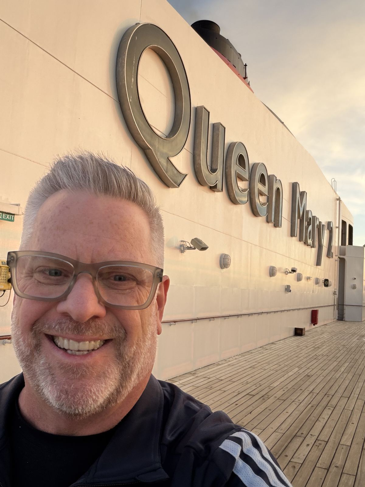

Hi, I'm Sean.
I'm a travel advisor in Los Angeles, which is funny, because I'm happiest somewhere grey and drizzly with a good cup of coffee.
I grew up in New York State, lived in Vermont, and moved west about ten years ago. My body still knows it's fall before the weather does. In Los Angeles, the weather never finds out.
I've crossed the Atlantic five times and been to a few dozen countries, mostly slowly. I like the long way: a ship instead of a plane when I can, a month in one place instead of a week in five, and the quiet season over the busy one. I like nice things, too. I just prefer them in Levi's and a sweater. If it brings you joy to dress up for gala night, good. You look great. It's just not for me.
Before this
I spent twenty years in emergency medicine, first as a paramedic and then as a physician assistant, and after that many years as a leadership coach. None of that is what I sell. But it shaped how I work: I ask a lot of questions, and I notice small details before they turn into big ones.
What I care about
Helping people keep traveling, the way they want, for as long as they want. Sometimes that's a trip of a lifetime. Sometimes it's a pace I wouldn't have picked at 40, and enjoying it more. Usually it's a bit of both.
I'm an independent advisor with Fora Travel. That gives me the booking tools, partners and support of a larger agency, and gives you one person to deal with: me.
Say hello
Tell me about the trip you've been thinking about, or just get Time Well Spent, my monthly letter, for now.